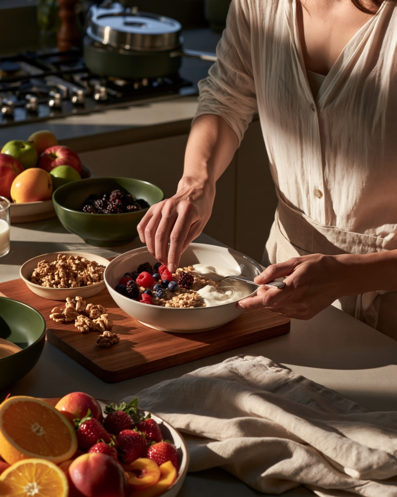

Nourish
Whole foods, quality sources, and mindful eating that supports your energy and health.
Learn moreA food-first, lifestyle-first approach for professionals ready to feel and perform at their best.
Download the Free Food Guide See how food brought my body back
I help busy professionals feel more energized, focused, and at home in their bodies through practical food and lifestyle choices.
My approach is simple: start with the foundations, make small changes that fit your life, and build habits that last.
Learn more about my storyWhole foods, quality sources, and mindful eating that supports your energy and health.
Learn moreSimple stress and lifestyle practices that support your nervous system and help you reset.
Learn moreLearn why food and lifestyle foundations matter before relying on quick fixes or medication.
Learn more